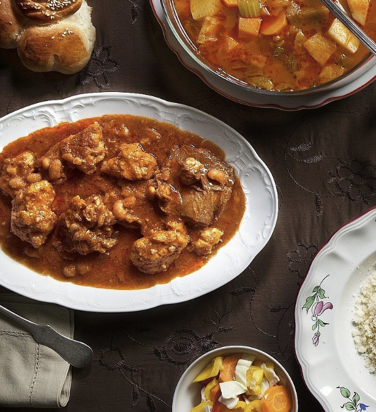

Georgia

Churchkhela - Almonds, walnuts, or hazelnuts are threaded onto a string and dipped in thickend grape must or fruit jucies and dried in the shape of a sausage.

Khinkali - A dumpling made of twisted knobs of dough stuffed with meat.

Khachapuri - A bread dish filled with cheese. Adjaruli khachapur, pictured here, contains an egg. Imeruli and Megruli are other varieties of Khachapuri with extra cheeses.
Israel

Etrogat - The flavor of Jerusalem. A juice mxiture of Etrog, khat, and grapefruit. Found at the Etrog Man store. Click here to learn about the stimulant drug khat used by Somali pirates.

Shawarma - Thinly sliced meat, typically lamb, chicken, turkey, beef, or a mixture of all. Served in pita or laffa bread. Traditionally topped with hummus, tahini, amba , schug, and/or harissa.

Shakshuka - A dish of poached eggs in a spicy tomato and pepper sauce, often served with bread.

Mafrum - A Libyan Jewish stuffed vegetable dish. Root vegetables, typically potatoes, are hollowed out and filled with a blend of ground meat and spices. These stuffed vegetables are then fried and simmered in a tomato-based sauce.

T’Becha - A Libyan slow-cooked beef dish which is really a stew. Cumin and garlic rule this dish, along with slow-cooked beef and dried white beans, and the result is warm, nourishing and supremely tasty.

Shamburak - A Kurdish-Syrian pastry served with a filling of your choice. Served hot and crispy straight from the taboon oven. Inside every pastry is Indian mashed potato, fried onion, chimichurri sauce,, and a meat of your choice. Go to Ishtabach in Jerusalem to try.